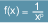
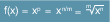
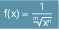

With the predefined function POT() it is possible to calculate any power for an input value.
POT() is programmable in the NC program and in synchronous actions.
Syntax
NC program:
POT(<x>,[<p>])
Synchronous action:
DO POT(<x>,[<p>])
Meaning
POT()
| Function call for calculating a power |
<x>
| Parameter 1: Input value (basis of the power function) |
Type: | REAL |
<p>
| Parameter 2 (optional): Exponent of the power function (≙ degree of the power function) |
Type: | REAL |
Value: | p ≥ 0 p ∈ ℕ0 | In the simplest case, the exponent is a non-negative integer. The formula for power calculation is then as follows: |
Restriction of the value range of the base <x>: None |
p ≤ -1 p ∈ ℤ | For negative integer exponents, the formula can be rearranged as follows:  |
Restriction of the value range of the base <x>: Since division by 0 is not permitted, the value for the base must always be unequal to zero for negative exponents: x ≠ 0 |
p = n/m n/m > 0 n ∈ ℕ0 m ∈ ℕ | If the exponent is a non-negative rational number of the form n/m, then the formula can also be represented as a root function:  |
Restriction of the value range of the base <x>: Since the root of a negative number cannot be mapped, the value for the base must always be greater than (or equal to) zero for root functions with odd exponents: x ≥ 0 for odd values of n |
p = - n/m n/m < 0 n ∈ ℕ0 m ∈ ℕ | If the exponent is a negative rational number of the form n/m, then the formula can also be represented as a root function in a fraction:  |
Restriction of the value range of the base <x>: Since the root of a negative number cannot be mapped and division by 0 is not allowed, the following is mandatory: For root functions in the denominator of a fraction and with odd exponents, the value for the base must be greater than zero: x > 0 for odd values of n For root functions in the denominator of a fraction and with even exponents, the value for the base must not be zero: x ≠ 0 for even values of n
|
Without specifying an exponent, the function calculates the power of degree 2 (square function): POT(<x>) → x2 |
| Note |
When entering the base <x> and the optional exponent <p>, applicable arithmetic laws must be observed. Not possible are, for example, divisions by zero or extracting a root with a negative base. In such cases, the function call leads to the output of an alarm. |
Examples
Program block | Result | Note |
POT(2)
| Return value = 22 = 4 | Power of degree 2 to base 2 |
POT(2,3)
| Return value = 23 = 8 | Power of degree 3 to base 2 |
POT(0,-1)
| Alarm | Division by 0 not allowed |
POT(-1,0.5)
| Alarm | Root of a negative number not permissible |